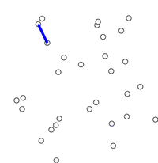

Graph¶
A Graph consists of:
nodes(vertices) andedges which connecting thesenodes.
Graphs are mathematical structures uesed to model pairwise relations between objects.

A distinction is made between:
undirected graph: where edges link two nodes symmetrically;directed graph: where edges link two nodes asymmetrically.
Topological Sorting¶
A topological sort of a directed graph is a linear ordering of its vertices such that for every directed edge uv from vertex u to vertex v, u comes before v in the ordering.
Kahn's Algorithm¶
The process is:
- we find a list of
start nodeswhich have no incoming edges and insert them into a queue; - we remove a node from queue and for each of next nodes, we decrease its indegrees, if next node's indegree is zero, we push it to the queue;
- loop step 1 and 2 until the queue is empty.
1 2 3 4 5 6 7 8 9 10 11 12 13 14 15 16 17 18 19 20 | |
Shortest Path(SP)¶
In graph theory, the shortest path problem is the problem of finding a path between two nodes in a graph such that the sum of the weights of its constituent edges is minimized. The mainly used algorihtms are:
- Floyd
- Bellman-Ford
- Dijkstra
| Floyd | Bellman-Ford | Dijkstra |
|---|---|---|
| Multiple-source Shortest Path | Singole-source Shortest Path | Single-source Shortest Path |
| Not negtive cycle graph | any graph | Not negtive edge graph |
| \(O(N^3)\) | \(O(NM)\) | \(O(MlogM)\) |
Floyd¶
Floyd algorithm compares all possible paths through the graph between each pair of vertices.
1 2 3 4 5 6 7 8 9 10 11 12 13 14 | |
Bellman-Ford¶
Bellman-Ford is an algorithm that computes shortest paths from a single source node to all of the other nodes in a weighted digraph. It is capable of handling graphs in which some of the edge weights are negtive numbers.
1 2 3 4 5 6 7 8 9 10 11 12 13 14 15 16 17 18 | |
Dijkstra¶
Dijkstra is an algorithm that computes shortest paths from a single source node to all of the other nodes in a weighted digraph. It is not able to handle graphs in which some of the edge weights are negtive numbers.

1 2 3 4 5 6 7 8 9 10 11 12 13 14 15 16 17 18 19 20 21 22 23 24 25 | |
K Shortest Path(KSP)¶
The KSP problem is a generalization of the SP problem in a given network. It asks not only about a shortest path but also about next \(k - 1\) shortest path (which may be longer than the shortest path). A variant of the problem is the loopless k shortest paths.
A*¶
1 2 3 4 5 6 7 8 9 10 11 12 13 14 15 16 17 18 19 20 21 22 23 24 25 26 27 28 29 | |
Topological Sorting¶
A topological sort of a directed graph is a linear ordering of its nodes such that for every directed edge \((u, v)\), \(u\) comes before \(v\) in the ordering.
BFS¶
1 2 3 4 5 6 7 8 9 10 11 12 13 14 15 16 17 18 19 | |
DFS¶
1 2 3 4 5 6 7 8 9 10 11 12 13 14 15 16 17 18 19 20 21 22 23 24 | |
Minimum Spanning Tree(MST)¶
A minimum spanning tree(MST) is a subset of the edges of a connected, edge-weighted undirected graph that connects all the nodes together, without any cycles and with the minimum possible total edge weight. That is, it is a spanning tree whose sum of the edge weights is as small as possible. More generallly, any edge-weighted undirected graph(not neccessarily connected) has a minimum spanning forest, which is a union of the minimum spanning trees for its connected components.
Kruskal¶
Kruscal's algorithm finds a minimum spanning forest of an undirected edge-weighted graph. If the graph is connected, it finds a minimum spanning tree. For a disconnected graph, a minimum spanning forest is composed of a minimum spanning tree for each connected component. It is a greedy algorithm in graph theory as in each step it adds the next lowest-weight edge that will not form a cycle to the minimum spanning forest.
1 2 3 4 5 6 7 8 9 10 11 12 13 14 15 16 17 18 19 20 21 22 23 24 25 26 27 28 29 30 31 32 33 34 35 36 37 38 39 40 41 42 43 44 45 46 47 48 49 50 51 52 53 | |
Prim¶
Prim algorithm is a greedy algorithm that finds a minimum spanning tree for a weighted undirected graph. This means it finds a subset of the edges that forms a tree that includes every nodes, where the total weight of all the edges in the tree is minimized. The algorithm operates by building this tree one node at a time, from an arbitrary starting node, at each step adding the cheapest possible connection from the tree to another node.

Strongly Connected Components(SCC)¶
Tarjan¶
Kosaraju¶
Euler Graph¶

An Eulerian trail or Euler walk in an undirected graph is a path that uses each edge exactly once. If such a path exists, the graph is called traversable or semi-eulerian.
An Eulerian cycle, Eulerian circuit or Euler tour in an undirected graph is a cycle that uses each edge exactly once.
A graph that has an Eulerian trail but not an Eulerian circuit is called semi-Eulerian.
Properties¶
- An undirected graph has Eulerian cycle if and only if every vertex has even degree, and all of its vertices with nonzero degree belong to a single connected component.
- An undirected graph can be decomposed into edge-disjoint cycles if and only if all of its vertices have even degree.
- An undirected graph has an Eulerian cycle if and only if exactly zero or two vertices have odd degree.
- A directed graph has an Eulerian cycle if and only if every vertex has equal in degree and out degree, and all of its vertices with nonzero degree belong to a single strongly connected component.
- A directed graph has an Eulerian trail if and only if at most one vertex has (out-degree) (in-degree) = 1, at most one vertex has (in-degree) (out-degree) = 1, every other vertex has equal in-degree and out-degree, and all of its vertices with nonzero degree belong to a single connected component of the underlying undirected graph.
Fleury¶
Fleury's algorithm is an elegant but inefficient algorithm, we don't use it in general.
Hierholzer¶
Hierholzer's algorithm provides a different method for finding Euler cycles that is more efficient than Fleury's algorithm:
- Choose any starting vertex v, and follow a trail of edges from that vertex until returning to v. It is not possible to get stuck at any vertex other than v, because the even degree of all vertices ensures that, when the trail enters another vertex w there must be an unused edge leaving w. The tour formed in this way is a closed tour, but may not cover all the vertices and edges of the initial graph.
- As long as there exists a vertex u that belongs to the current tour but that has adjacent edges not part of the tour, start another trail from u, following unused edges until returning to u, and join the tour formed in this way to the previous tour.
- Since we assume the original graph is connected, repeating the previous step will exhaust all edges of the graph.
1 2 3 4 5 6 7 | |
Problems: